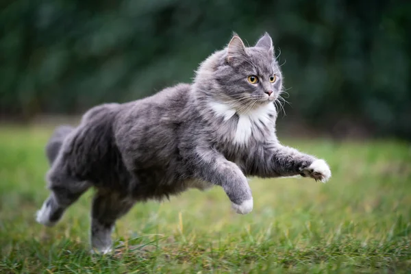

Все про котиків
Ось три найпоширеніших котячих звичок, за які їх так любимо.
1. Топтання
Топтання – один із найхарактерніших виявів котячої любові. Тільки-но ви лягаєте у ліжко або сідаєте в крісло, кішка відразу з'являється поряд і починає масажувати вас або переминати вашу ковдру своїми лапами!

2. Спритність
Це те, що робить відео з котами такими популярними в Інтернеті – їхня здібність різко кидатися та високо стрибати, зберігаючи рівновагу в найнеймовірніших ситуаціях. Існують навіть змагання для визначення найспритнішого кота. Вони там охоче стрибають через обручі та проповзають у тунелі.
Однак важливо не заохочувати вашого кота виконувати небезпечні трюки, адже всупереч поширеній думці, кіт не завжди падає на ноги! Але ніщо не заважає нам захоплюватися їхньою спритністю. Можна із задоволенням спостерігати, як ваш пухнастий улюбленець акробатично ганяє іграшку сходами і вниз, і вгору або бавиться зі шматочком котячого корму!

3. Маленькі схованки
Чи є взагалі щось миліше, ніж котячі очі, що раптом визирають із паперового пакета? Або котик, який вклався у картонну коробку, втричі меншу за нього? Всі знають, що коти завжди відшукують собі маленькі схованки. Нам це здається надзвичайно милим, але насправді вони хочуть почуватися безпечно. Шукають безпеку, комфорт і тепло і знаходять їх у найнеочікуваніших для нас місцях: коробці з-під взуття або навіть умивальнику.
5 міфів про котів
Коти мурчать, бо їм добре
Це не завжди так, адже є безліч видів мурчання. М’яке та негучне справді можна почути, коли котик у доброму гуморі або дрімає. Більш різке муркотіння видає знервованість — таким звуком чотирилапий намагається заспокоїти себе чи свого соціального партнера.
Іноді коти застосовують мурчання, аби вимагати щось, наприклад, поки ви обідаєте. А от про погане самопочуття чи біль свідчить муркотіння з коротким, низьким і протяжним «моау». Тому оцінюйте котячу мову в конкретній ситуації та завжди прислухайтеся до свого улюбленця.
Коти нікого не люблять
Котики справді не настільки соціальні, як собаки. Причина ховається у їхній природі, вони — хижаки-одинаки. Однак ці чотирилапі теж можуть встановлювати прихильність та формувати групи. Важливим моментом є те, що в будь-якій ситуації, базою безпеки для котів є їхня територія, тобто дім або квартира. Водночас ці невеликі та дуже вразливі хижаки бояться багато чого у своєму житті. Тому люблять вашу турботу.
Коти ліниві
Насправді котики чудово і радо навчаються. Проблема в тому, що їх складно примусити і вони не люблять багато повторень. Наше завдання зрозуміти, як мотивувати чотирилапого і як побудувати процес з результатом. Правильний підхід розкриє їхній потенціал. Тому насамперед нам потрібно навчитися вчити.
Коти мстиві
Думка про мстивих котів популярна, але наукового підґрунтя не має. Помста потребує складного розуміння емоцій і наслідків. Їхня префронтальна кора, відповідальна за планування, менш розвинена, ніж людська. Проблемна поведінка має простіші пояснення. Керуйтесь золотим правилом зоопсихології — каноном Ллойда Моргана — не приписуйте тваринам складні мотиви без необхідності. Розуміння справжніх причин допоможе ефективніше розв'язувати проблеми з чотирилапим другом.
Коти завжди падають на лапи
Тут нас вводить в оману так звана систематична помилка того, хто вижив. Тобто ми аналізуємо ситуації, про які всі говорять. Наприклад, кіт впав з сьомого поверху та абсолютно нічого не зламав. Однак до ветеринарних лікарень майже щодня привозять чотирилапих після падіння. Врятувати вдається далеко не всіх. Тому не варто приписувати їм магічні здібності. Турбуйтеся про своїх котиків.
Які існують породи котів?
- Перська кішка
- Сіамська кішка
- Британська короткошерста
- Мейн-кун
Цікаві факти про котів: п’ють морську воду, витягують язик на 1 метр, мають “компас”. Що ще?
Коти і кішки є одними з найбільш популярних і улюблених вихованців. Щорічно 8 серпня з ініціативи Міжнародного фонду із захисту тварин відзначають Всесвітній день кішок (World Cat Day), прочитайте про цікаві факти про домашніх пухнастиків, про які ви можливо не знали
Всесвітній день кішок (World Cat Day) з'явився в календарі в 2002 році не тільки з метою вшанування муркотунів, але і для залучення уваги до проблеми бездомних котів і кішок.
Котів і кішок неможливо не любити, але при цьому треба вміти поважати їх незалежність і миритися з їх безмежним самолюбством.
- Кожен господар кішки знає, що кішки люблять спати, але багато хто не здогадуються скільки саме вони сплять. За підрахунками кішки проводять 70% життя уві сні.
- Люди не можуть пити морську воду, а кішки можуть. Їх нирки фільтрують сіль.
- Домашні кішки бігають зі швидкістю 48 кілометрів на годину, і це на 5 кілометрів швидше, ніж у найшвидшої людини Усейна Болта (43 кілометрів на годину).
- Серце кішки б'ється майже в два рази швидше, ніж у людини — від 110 до 140 ударів на хвилину.
- Були випадки, коли кішки вижили при падінні з 32 поверху на бетон. Рекорд найдовшого не смертельного падіння в світі належить кішці, яка впала з 46 поверху будівлі і вижила.
- У кішок намагнічені клітини мозку, які діють як компаси, дозволяючи їм легко знаходити дорогу додому.
- У кішок потові залози знаходяться тільки на подушечках лап.
- Відомо, що кішки видають близько 100 звуків, а собаки тільки 10.